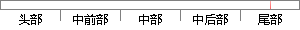

2-1 创建一个任务，打印自己的优先级号后延时2秒。
片段位置图

相似结果
相似片段：[图文]II 启动uC/OS-II,在这之前必须创建至少一个任务...发送信号量,当然是优先级高的执行,此时任务1 已经...任务4延时2秒,那么在任务2完成后,任务1仍然处于挂...
| 标题 | 《uCOS-II创建了四个任务可最终只执行了两个任务 (amoBBS 阿莫电子...》 |
| 对比库 | PaperRater云论文库 |
| 网址 | http://www.amobbs.com/thread-4506112-1-1.html |
| 相似率 | 65% （轻度抄袭） |
※ 片段修改建议 ※
近似词参考：- 创建：建立 创立
- 自己：本身
- 任务：使命 义务
系统自动生成语句：2-1 建立一个使命，打印本身的优先级号后延时2秒。
注：本片段修改建议为系统自动生成，仅供参考。